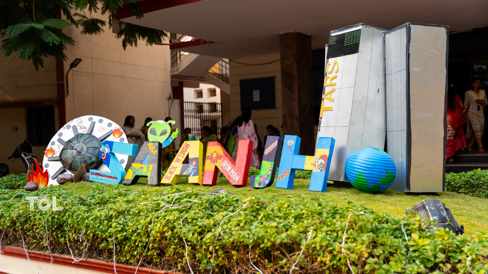

This is the first main event in kmit. Navaras is a vibrant cultural celebration held during Ganesh Chaturthi that brings together students to showcase the spirit of tradition, talent, and togetherness. Inspired by the nine emotions and artistic expressions, this event features music, dance, drama, fashion, and creative performances that reflect the richness of Indian culture. Navaras creates a festive atmosphere on campus, encouraging students to participate, perform, and celebrate with joy.
.jpg)
It is not just an event, but a memorable experience that strengthens friendship, creativity, and the festive spirit of Ganesh Chaturthi.
Patang Utsav is one of the most vibrant and eagerly awaited events in our college, celebrated during the joyous festival of Sankranti. This event brings together students, faculty, and staff to enjoy the spirit of tradition, unity, and fun.
The sky comes alive with colorful kites of different shapes and sizes, symbolizing freedom, joy, and creativity. Participants enthusiastically compete to fly their kites the highest and skillfully cut others’ strings, filling the atmosphere with excitement and cheers.

Join us as we paint the sky with colors and celebrate the spirit of Sankranti with energy, enthusiasm, and endless joy!
KMIT Evening is the most awaited and largest event in our college, bringing together students, faculty, and guests for two days of excitement, creativity, and celebration. It stands as a symbol of the vibrant spirit and unity of KMIT.
The festivities begin with a lively morning event on the first day, filled with engaging activities, competitions, and performances that showcase the diverse talents of our students. From music and dance to fun-filled events, the campus buzzes with energy and enthusiasm.

The second day builds up to the highlight — the grand KMIT Evening. As the sun sets, the stage comes alive with electrifying performances, cultural showcases, and unforgettable moments. The celebrations continue until 8:40 PM, creating an atmosphere filled with joy, lights, and applause.
KMIT Evening is more than just an event — it is an experience that creates lasting memories, strengthens friendships, and celebrates the true essence of college life.
for any queries vist this website ------>>>PR kmit